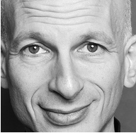
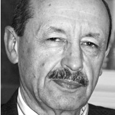

Конференція TEDxKyiv постійно шукає талановитих і цікавих людей, які генерують нові ідеї і створюють своє бачення нашого майбутнього. Ми хочемо, щоб ці ідеї прозвучали зі сцени і були підхоплені тисячами шанувальниками креативних і сміливих рішень, які здатні змінити світ навколо нас.
Якщо ви знаєте таких людей і вважаєте, що вони можуть гідно виступити на нашій конференції - запропонуйте їх нам. Для цього просто заповніть формуЗапропонуват доповідачаі якщо ваш кандидат виявиться справжнім спікером TEDx - ми його обов'язково запросимо на найближчу подію.
Також ми запрошуємо викладачів, вчених, професіоналів і бізнесменів самостійно виступити з доповідями і взяти участь у конференції "ідей, вартих поширення" TEDxKyiv.
Умови участі
Конференція відбувається у суботу вдень. Вона складатиметься з трьох сесій виступів, розділених двома нетворкінг-сесіями для спілкування зі спікерами та обговорення піднятих тем. Завершуватиме подію святковий фуршет.
- — Заявку на участь можна направити через реєстраційну форму.Реєстрація
- — У разі затвердження, особі, яка подала заявку, буде надано письмове запрошення.
- — Участь у конференції передбачено тільки по персональному запрошенню Оргкомітету.
- — Спікер зобов'язується передати Оркомітету матеріали доповіді (презентацію у форматі MS Power Point, відео, аудіо та інше) не піздніше 2-х тижнів до конференції.
- — Спікер зобов'язується зробити мінімум два тестових виступу перед організаторами під час репетиції події.
-
— Спікер зобов'язується підтримуватись правил TED, вказаних нижче:
- Визначте планку високо. Намагайтесь підготувати найкращий виступ у своєму житті. Покажіть щось таке, чого раніше не показували, зробіть щось таке, що публіка запам’ятає назавжди. Поділіться ідеєю, яка може змінити світ.
- Будьте відкритими! Діліться своїми захопленнями, мріями, переживаннями. Будьте вразливими. Говоріть як про успіхи, так і про невдачі.
- Робіть складне зрозумілим. Не намагайтесь вразити публіку на інтелектуальному рівні. Не говоріть абстрактно. Пояснюйте, наводьте приклади, розповідайте історії. Якомога більше конкретики!
- Викликайте у своїх глядачів емоції. Розвеселіть, розчульте нас!
- Контролюйте своє его. Не хизуйтесь – це найшвидший шлях до втрати уваги публіки.
- Не продавайте нічого зі сцени! Якщо ми не попросили вас цього робити, то не говоріть про свою компанію чи організацію. Навіть не думайте рекламувати свої товари чи послуги або просити фінансування зі сцени.
- Ви можете коментувати виступи інших доповідачів, хвалити чи критикувати їх. Полеміка пожвавить виступ, а завзята підтримка додасть сили.
- Не зачитуйте свою доповідь. Можна користуватись нотатками. Проте, якщо вибір стоїть між читанням і незв’язною промовою, то вже краще читати.
- Дотримуйтесь часових рамок. Інакше ви відбиратимете час у наступних доповідачів. Ми цього не допустимо.
- Відрепетируйте свою доповідь із засіканням часу на зрозумілість та ефект перед людиною, якій довіряєте.
Акредитація спікерів
Акредитація спікерів проводиться організаторами TEDxKyiv.
Для оформлення акредитації необхідно надати такі документи:
- — Заявку.
- — Матеріали доповіді.
Організатори залишають за собою право відмовити у акредитації без пояснення причин.
Стань одним з нас! ПРИЄДНУЙСЯ!

Сет Годін.
Beatles не винайшли тінейджерів. Вони лиш вирішили їх очолити.
Ганс Рослінґ.
Країни рухаються більш-меньш із тією ж швидкістю, що гроші та здоров'я.

Пауль Пшенічка.
TED – загалом прекрасний проект, який дозволяє широкій Інтернет-аудиторії познайомитися "вживу" з цікавими ідеями чи досягненнями.